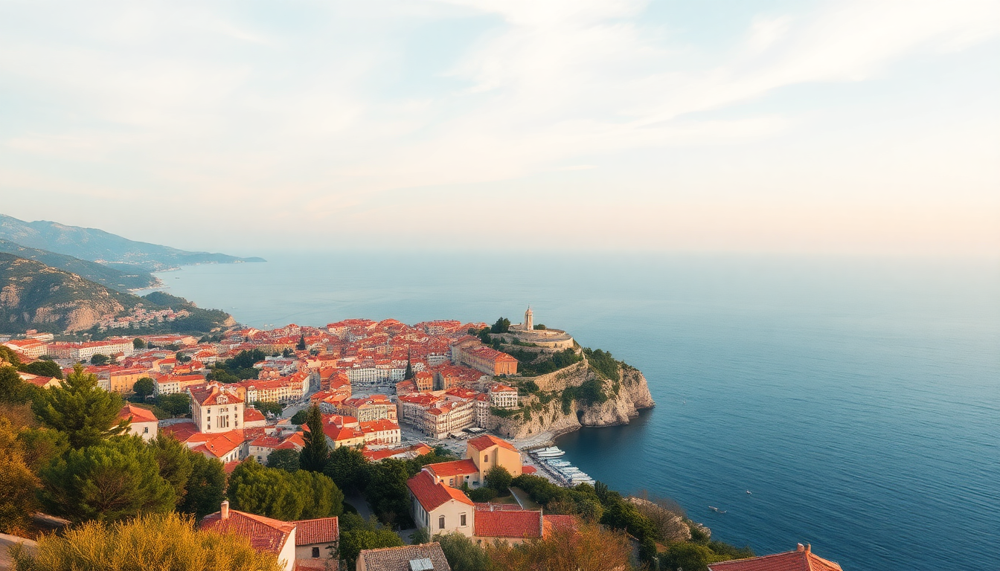

Best Cities to Visit in Croatia: Dubrovnik, Split, Zagreb

I spent two weeks bouncing between Croatia’s three big cities, and the differences surprised me. Dubrovnik is gorgeous but crowded. Split feels like a real city that also happens to have a palace. Zagreb is the underdog — no coast, but the best food and coffee. Here’s what I learned about each, including where we stayed, what we ate, and what I’d do differently.
Is Dubrovnik worth the hype (and the crowds)?
Yes, but you need a strategy. The Old Town is stunning — those limestone streets and orange roofs look exactly like the photos. But between 10 AM and 4 PM, cruise ship crowds turn the main street, Stradun, into a human conveyor belt. We walked it at 7 AM and had the place mostly to ourselves.
- Walk the city walls early (book the 8 AM slot). It takes about an hour and gives you the best views over the Adriatic.
- Skip the cable car unless you want to pay €27 for a five-minute ride. Instead, hike up to Fort Imperial on Mount Srđ — it’s steep but free.
- Lunch at Konoba Dalmatino just off Stradun. The black risotto with cuttlefish was the best meal we had in Dubrovnik.
- Stay outside the walls to save money. We booked a room at Hotel Kompas in Lapad — a 15-minute walk along the sea — and it was quieter with better prices.
The Game of Thrones walking tours are popular, but I’d skip them unless you’re a superfan. The city is the real star.
What’s the best way to get from Dubrovnik to Split?
You have three options, and one is clearly better. The coastal drive via the D8 highway takes about 3.5 hours and is stunning — cliffs on one side, islands on the other. We rented a car through Sixt at Dubrovnik Airport and dropped it at Split Airport. That was the right call.
- Car rental gives you flexibility to stop at Ston for the famous oysters or Makarska for a swim break.
- FlixBus runs direct coaches for about €20–30. Comfortable enough, but you’re stuck on the schedule.
- Catamaran ferries (Krilo or Jadrolinija) take 4.5 hours and let you see the islands from the water. We did this on the way back — choppy in June, but scenic.
If you’re tight on time, fly. Croatia Airlines has a 40-minute hop between the two airports. But you miss the coast.
What should I actually do in Split?
Split is less polished than Dubrovnik but more alive. The Diocletian’s Palace isn’t a museum — it’s a living neighborhood with apartments, bars, and cats sleeping on Roman columns. We spent three days here and never felt bored.
- Diocletian’s Palace — walk through the Peristyle square at sunset. Grab a drink at Bar Judino on the steps and just watch people.
- Marjan Hill — a 20-minute climb from the Old Town. The view over the harbor and islands is free and better than any paid lookout.
- Green Market (Pazar) — right outside the palace walls. Buy fresh figs, dried lavender, or a slice of cheese from the old ladies who’ve been selling there for decades.
- Dinner at Konoba Fetivi — small, no-frills, and the grilled fish is incredible. Book a day ahead.
We stayed at Hotel Vestibul Palace, which is literally inside the palace walls. Cool experience, but the rooms are small and it’s loud at night. Next time I’d pick Boutique Hotel Marjan near the Riva promenade — quieter, better value.
Is Zagreb worth visiting if I only have a week?
Short answer: yes, but don’t try to squeeze it into a beach trip. Zagreb is a city break, not a coastal stop. We flew into Zagreb, spent two days there, then took the train to Split. That worked well.
- Upper Town (Gornji Grad) — walk from St. Mark’s Church (that tiled roof) down to the Lotrščak Tower for the noon cannon firing. It’s a daily ritual.
- Dolac Market — the city’s main outdoor market. We grabbed burek and coffee from a stall called Mlinar and sat on the steps watching vendors sell strawberries.
- Museum of Broken Relationships — sounds gimmicky, but it’s genuinely moving. Set aside 45 minutes.
- Coffee culture — Zagreb does coffee better than anywhere in Croatia. Cogito Coffee on Tkalčićeva Street is the spot. Order a macchiato, stand at the bar, and don’t rush.
We ate at Restoran Vinodol for traditional štrukli (baked dough with cheese) and La Štruk for a modern take. Both were good, but La Štruk had better portions for the price.
When is the best time to visit each city?
Timing matters a lot in Croatia. I went in mid-June and it was already packed in Dubrovnik. Here’s the breakdown:
- Dubrovnik — April–May or late September–October. Avoid July and August unless you enjoy queuing for gelato in 35°C heat.
- Split — May or September. Water is warm enough to swim, and the crowds are manageable. June was borderline busy.
- Zagreb — shoulder seasons work here too, but winter has charm. The Advent Christmas market in December is one of Europe’s best, and the city feels festive without being chaotic.
We missed the summer peak by two weeks and still felt the crush in Dubrovnik. If I went again, I’d target the last week of September.
FAQ
How many days should I spend in each city? Three days in Dubrovnik (including one day for day trips to Lokrum Island or Cavtat), three in Split (with a day trip to Hvar or Brač), and two in Zagreb. That’s a solid week and a half. If you have less time, skip Zagreb and do Dubrovnik and Split only.
Is it easy to get around Croatia without a car? Yes, for the main cities. Trains connect Zagreb to Split (about 5.5 hours, scenic but slow). Buses cover the coast well. Ferries link the islands. A car helps if you want to stop at smaller towns like Trogir or Primošten, but parking in Old Town Dubrovnik is a nightmare.
Which city has the best food? Zagreb, by a margin. The restaurant scene is more diverse and less tourist-priced. Split has good seafood but many places near the palace are overpriced. Dubrovnik’s food is fine but expensive — you pay for the location.
Conclusion
- Dubrovnik is a one-time marvel. Go early, stay outside the walls, and don’t bother with the cable car.
- Split is the best base for island hopping and has the best balance of history and real life.
- Zagreb is the dark horse — better food, better coffee, and far fewer tourists.
- Plan your timing carefully. June is the tipping point; September is ideal.
- Rent a car for the Dalmatian coast, take the train to Zagreb, and skip the ferries unless you have sea legs.